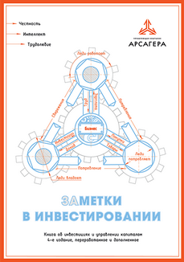

О компании
ПАО «Управляющая компания Арсагера» — первая в России управляющая компания, акции которой обращаются на бирже. Компания управляет паевыми инвестиционными фондами (ПИФами) и предоставляет услуги индивидуального доверительного управления.
На 2019 год под управлением компании находятся три открытых, два интервальных и один закрытый паевой инвестиционный фонд. Офис компании расположен в Санкт-Петербурге.
Чистые активы (BV) на 30 сентября 2018 года составляли 213,3 млн рублей.
Арсагера стала первой в России управляющей компанией, объявившей о проведении IPO.
Фонды под управлением компании
Узнайте больше на официальном сайте.
История развития
ПАО «Управляющая компания Арсагера» было создано в 2004 году.
Еще на стадии разработки проекта по созданию компании были приняты два безоговорочных условия: бизнес должен быть публичным, а владельцем этого бизнеса должен стать максимально широкий круг российских институциональных и частных инвесторов. В связи с этим УК «Арсагера» была организована как открытое акционерное общество.
Компания независима от финансово-промышленных групп, обладает диверсифицированной структурой акционеров, собственной идеологией управления капиталом, сильной командой специалистов и уникальной базой знаний об инвестициях.
Компания создана для работы в отрасли по управлению капиталом – именно эта относительно новая для России отрасль способна решить задачи национального уровня: повысить благосостояние граждан России, сделав их собственниками отечественного бизнеса, и помочь в улучшении жилищных условий, привлекая их к финансированию жилищного строительства.
В начале 2005 года были получены лицензии на осуществление деятельности по управлению паевыми инвестиционными фондами и управлению ценными бумагами. В середине мая того же года в компанию поступили первые средства к управлению.
Первоначально компания вела свою деятельность на рынке ценных бумаг, но опыт, полученный топ-менеджментом и ключевыми сотрудниками при осуществлении предыдущих проектов в области недвижимости, позволил запустить фонд недвижимости - ЗПИФН «Арсагера - жилищное строительство», который позволяет осуществлять инвестиции в жилую строящуюся недвижимость.
В конце 2007 года ПАО УК Арсагера провела публичное размещение акций (IPO), став первым представителем инвестиционного бизнеса в России, предложившим свои акции на открытом рынке. Большинство целей, поставленных компанией в ходе IPO, было достигнуто - появилось более ста новых акционеров, повысилась известность компании. Полученные средства были направлены на развитие компании и продвижение инвестиционных продуктов.
В феврале 2008 года акции компании были выведены на Фондовую биржу ММВБ - УК «Арсагера» и здесь оказалась первопроходцем среди управляющих компаний. В первые дни после вывода бумаг на биржу прошли первые сделки. В апреле 2008 года компанией был продан крупный пакет акций, находящихся на балансе.
С 2008 года компания начинает публичное освещение результатов мониторинга состояния корпоративного управления в России, оценивая около 200 крупнейших акционерных обществ по более чем 60 критериям.
В 2013 году в рамках деятельности по повышению финансовой грамотности российских граждан компания издала книгу об инвестициях и управлении капиталом «Заметки в инвестировании» и приступила к ее активному распространению.
В 2016 году компания запустила фонд, ориентированный на вложения в акции крупнейших иностранных компаний ИПИФ рыночных финансовых инструментов «Арсагера – акции Мира»
В 2018 году внедрена система дистанционного приема заявок для совершения операций с паями фондов через сеть.
Основные принципы работы
ОткрытостьМы хотим быть абсолютно честными с нашими клиентами и поэтому предоставляем информацию обо всех действиях с активами, методиках управления и результатах нашей деятельности.
ДоступностьИнвестиции — это вовсе не прерогатива богатых, как думают многие. Инвестиции доступны всем. В фонды под управлением УК «Арсагера» возможны вложения от 1 000 рублей.
ДистанционностьПриобретать паи фондов под управлением нашей компании возможно из любой точки России, где есть подключение к сети Интернет.
ОбучениеНесмотря на то, что для успешного инвестирования не нужны специальные знания и опыт, они не будут лишними. Наша база знаний об инвестициях и управлении капиталом содержит более 100 материалов. Она доступна всем желающим и будет полезна как новичкам, так и профессионалам.
Наша миссия — забота о Будущем людей.